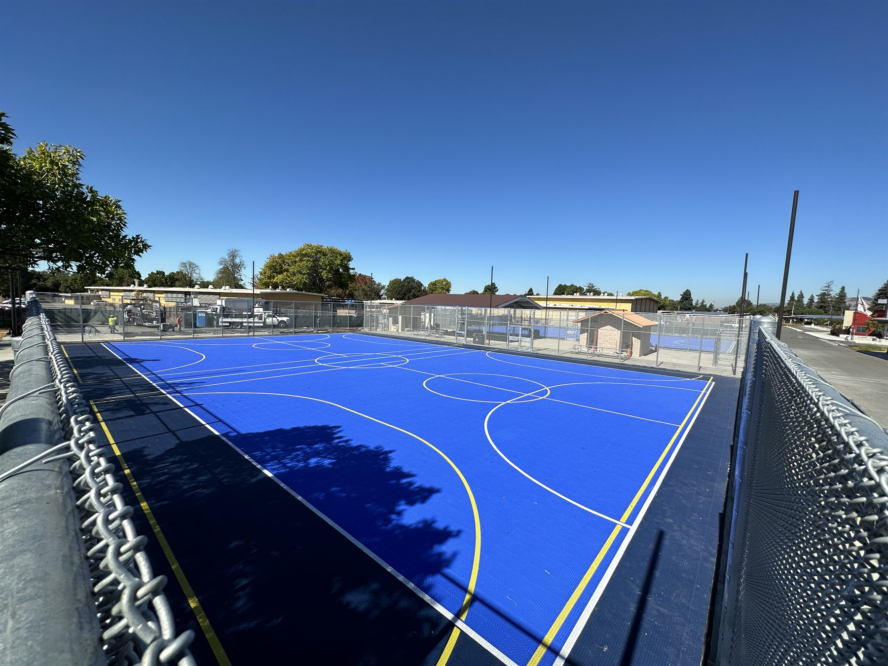

Commercial Security Perimeters
Heavy-duty chain link systems for yards, industrial sites, truck access areas, and commercial property lines.
- Wide-run perimeter fencing
- Security-minded access layouts
- Durable framing for demanding sites
Chain Link Fence Contractor Serving Hayward + 50 Miles
Pro Fence Company specializes in chain link fence installation across Hayward and surrounding Bay Area communities within 50 miles for commercial perimeter security, schools, sports courts, utility enclosures, access gates, public work scopes, and practical residential boundary work.
Chain Link Specialty
Where It Fits Best
Heavy-duty chain link systems for yards, industrial sites, truck access areas, and commercial property lines.

Open-sightline chain link fencing for playgrounds, courts, campuses, and other high-use public spaces.

Chain link layouts for screened utility zones, equipment protection, side yards, and straightforward property separation.
Why Clients Choose Chain Link
See Real Chain Link Work
Chain Link FAQs
Yes. Commercial security fencing is one of our strongest specialties. We use chain link for industrial sites, campuses, sports spaces, access points, and other demanding perimeters.
Yes. A clean layout, sharp alignment, the right gate details, and privacy slats when needed make a major difference in the final look.
Yes. We handle chain link gates, utility enclosures, slatted privacy sections, and specialty layouts that need more than a basic perimeter run.
Chain Link Estimates